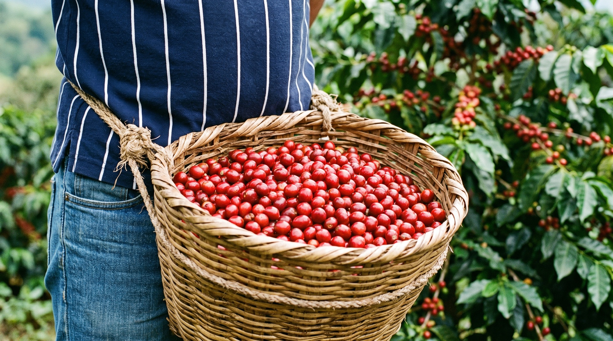
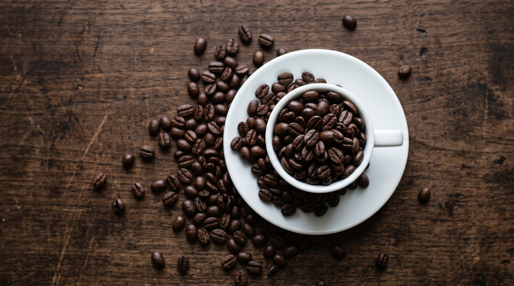
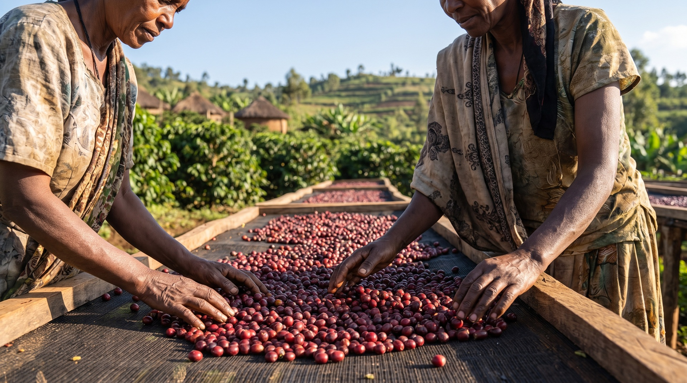
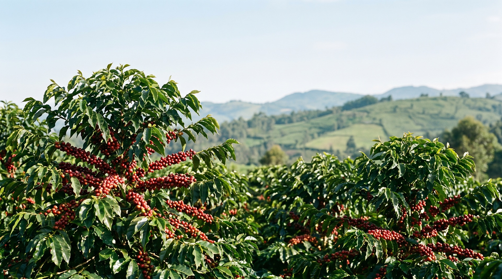
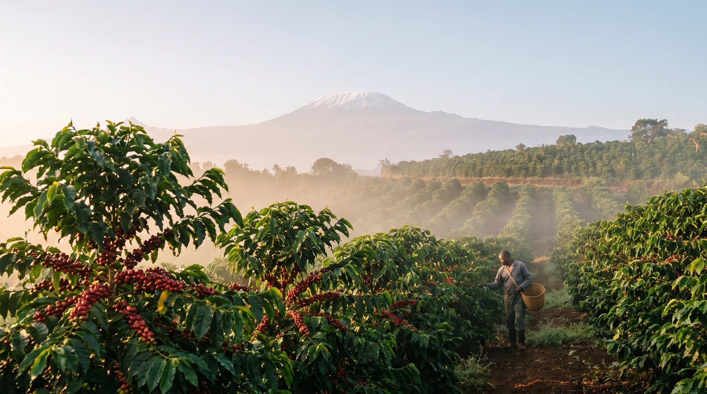
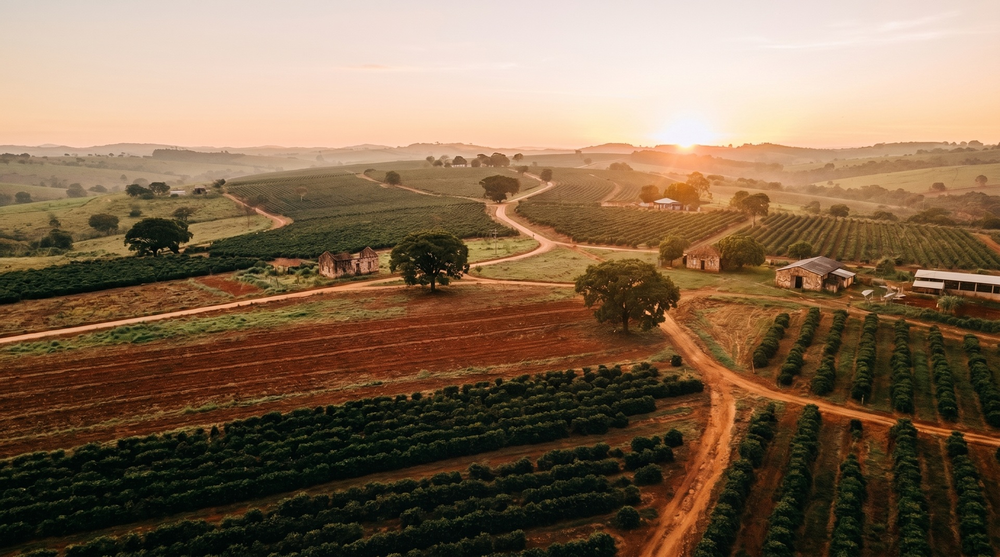
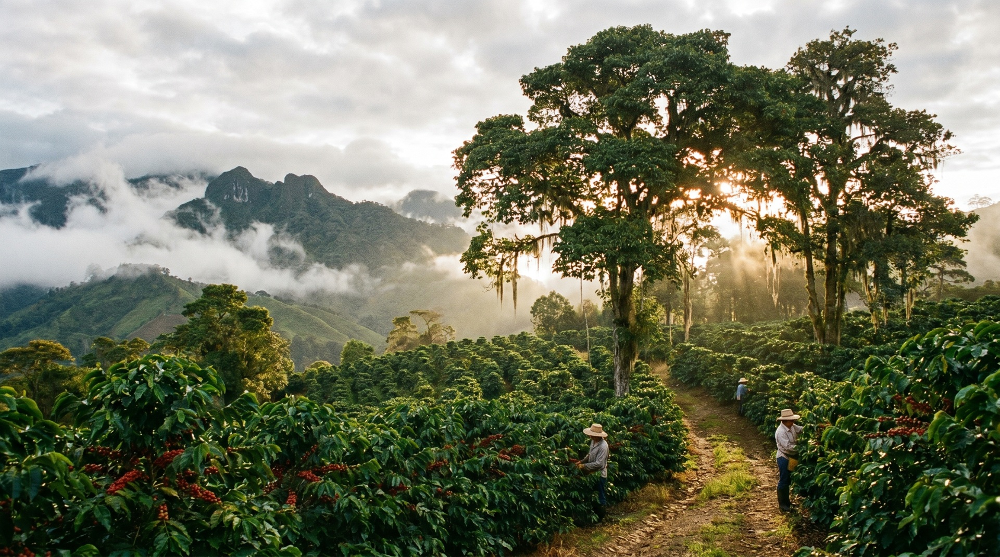
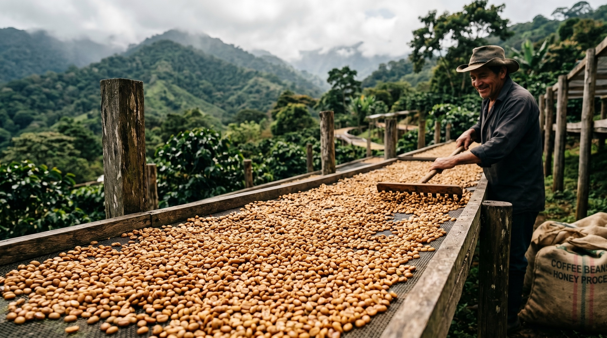
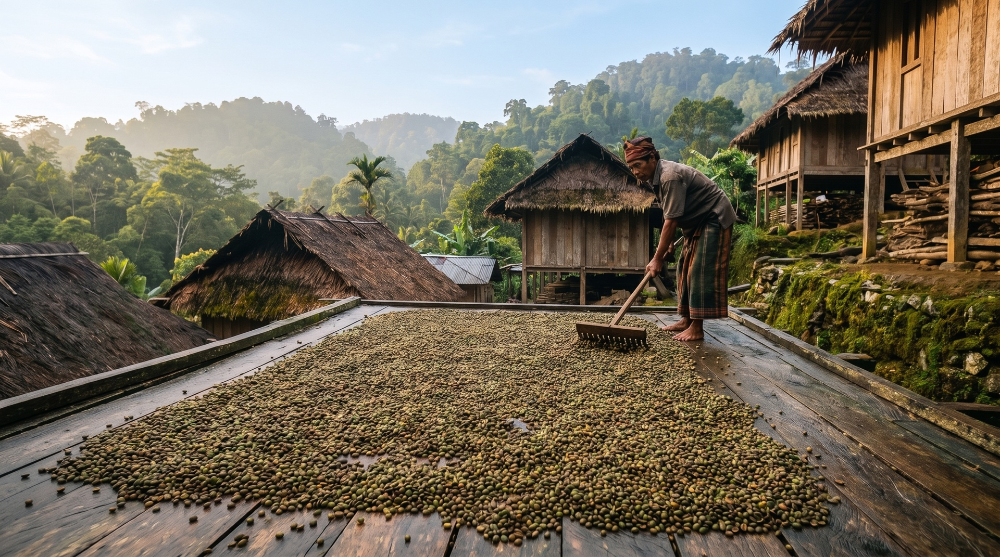
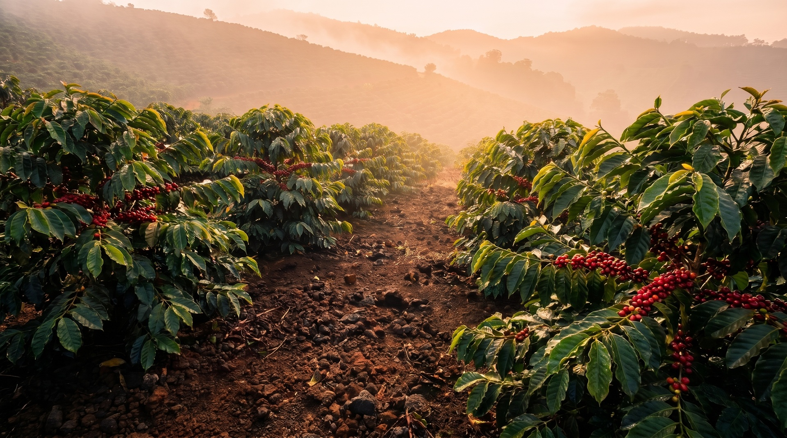

LOAM ROASTERSのこだわり
一級品だけを、その手で確かめて。
世界各地の産地に足を運び、実際にカップを重ねて選び抜いた豆だけを店頭に並べています。標高、土壌、精製方法。豆の個性を決めるすべての条件に目を配り、基準に満たないロットは扱いません。私たちが自信を持ってお渡しできる一杯のために、妥協のない目利きを続けています。
土地と、その先の未来へ。

一杯のコーヒーの背景には、豆を育てる生産者と、その土地の未来があります。LOAM ROASTERSでは、適正な対価で取引を行う生産者との関係を大切にし、環境に配慮した栽培方法を選ぶ農園を積極的にセレクトしています。持続可能な生産があってこそ、私たちは一級品の豆と出会い続けることができる。その循環を、次の世代へも繋いでいきたいと考えています。
確かな技術が、一杯を仕上げる。
焙煎士も、バリスタも、それぞれの分野で研鑽を積んだプロフェッショナルたちです。豆の個性を見極める焙煎から、抽出という最後の仕上げまで。妥協のない技術が重なり合うことで、はじめて一杯のコーヒーが完成します。
コーヒー豆の特徴

コーヒーの味わいは、産地の気候や土壌、栽培される品種、そして育て方によって大きく変わります。同じ豆でも、標高が違えば酸味の質が変わり、精製方法が違えば香りの印象も変わる。ここでは、LOAM ROASTERSが実際に扱う産地の特徴を、地域ごとにご紹介します。世界中に広がる産地を知ることは、一杯のコーヒーをより深く味わうことに繋がるはずです。
アフリカのコーヒー豆
エチオピア
コーヒー発祥の地が育む、華やかな香り

コーヒー発祥の地として知られるエチオピア。在来種と呼ばれる多様な品種が、標高1,800m以上の高地で栽培されています。ナチュラル精製による豆は、ベリーやフローラルを思わせる華やかな香りが特徴。カップに注いだ瞬間から、果実のような甘い香りが広がります。
ケニア
厳格な格付けが生む、力強い酸味

厳しい品質格付け制度のもと、SLシリーズと呼ばれる品種を中心に栽培されるケニアの豆。肥沃な赤土の高地で育まれ、しっかりとしたボディと、ベリーのようなジューシーな酸味が際立ちます。飲みごたえのある、輪郭のはっきりした一杯に仕上がります。
タンザニア
キリマンジャロ山麓が育てる、澄んだ味わい

キリマンジャロの麓、高地の火山灰土壌で栽培されるタンザニアの豆。ブルボン系品種を中心に、ウォッシュド精製による透明感のある味わいが特徴です。柑橘のような爽やかな酸味と、すっきりとした後味が楽しめます。
中南米のコーヒー豆
ブラジル
大地の恵みが生む、優しい甘みとコク

世界最大のコーヒー生産国であるブラジル。広大ななだらかな大地で、ナチュラルやパルプドナチュラルによる精製が主流です。ブルボン系品種を中心に育まれた豆は、ナッツやチョコレートを思わせる甘い香ばしさとまろやかなコクが特徴。バランスの取れた飲みやすい一杯に仕上がります。
ホンジュラス
中米の山岳地帯が育む、繊細なバランス

中米の山岳地帯、寒暖差の大きい高地で栽培されるホンジュラスの豆。カトゥーラやパカマラといった品種が中心で、ウォッシュド精製による澄んだ味わいが持ち味です。キャラメルのような甘さと穏やかな酸味が調和し、飲み進めるほどに落ち着く味わいです。
コスタリカ
徹底した精製管理が生む、クリーンな味わい

品質管理の徹底で知られるコスタリカ。ハニープロセスと呼ばれる独自の精製方法により、蜜のような甘さと際立つクリーンさを両立させています。カトゥーラ種を中心とした豆は、柑橘系の爽やかな酸味と、はちみつのような甘い後味が特徴です。
アジア・太平洋のコーヒー豆
インドネシア
湿式精製が生む、深いコクと土の香り

スマトラ島を中心に、独自の湿式精製「スマトラ式」で仕上げられるインドネシアの豆。多湿な気候の中、じっくりと時間をかけて精製されることで、スパイシーで土やハーブを思わせる複雑な香りが生まれます。とろりとした厚みのあるコクと、低めの酸味が特徴です。
ベトナム
力強いロブスタ種が生む、濃厚な飲みごたえ

高地の火山灰土壌で栽培される、力強い風味が持ち味のロブスタ種を中心に生産されるベトナムの豆。苦味とコクがしっかりとした骨太な味わいで、深煎りとの相性も抜群です。ミルクやシロップとの組み合わせでも負けない、飲みごたえのある一杯に仕上がります。
コーヒー豆の選び方
その日の気分やお好みの味わいから、産地を選んでみませんか。酸味が好きな方も、しっかりとしたコクが好きな方も、それぞれにおすすめの産地をまとめました。
酸味やフルーティーな味わい
華やかな酸味と、果実のような香りを求めて
爽やかな酸味と、フルーティーな香りが持ち味の産地をまとめました。軽やかな一杯を求める方におすすめです。
| 産地 | 特徴 | 香り・味のポイント |
|---|---|---|
| エチオピア | 在来種、ナチュラル精製 | ベリーのような甘い香り |
| ケニア | SLシリーズ、赤土の高地 | ジューシーで力強い酸味 |
| コスタリカ | ハニープロセス | 柑橘系の爽やかな酸味 |
| ホンジュラス | 山岳地帯、寒暖差 | 穏やかで澄んだ酸味 |
苦味やコクのしっかりした味わい
どっしりとしたコクと、深い余韻を求めて
しっかりとした苦味とコク、飲みごたえのある産地をまとめました。ミルクとの相性を求める方にもおすすめです。
| 産地 | 特徴 | 香り・味のポイント |
|---|---|---|
| インドネシア | スマトラ式精製 | スパイシーで深いコク |
| ベトナム | ロブスタ種中心 | 力強い苦味と骨太な飲みごたえ |
| ブラジル | ナチュラル精製 | ナッツのような香ばしさ |
| タンザニア | 火山灰土壌、ウォッシュド | すっきりとした後味 |
LOAM ROASTERSのコーヒーをご自宅で
あの一杯を、暮らしの中へ。
店内で味わっていただいている豆は、そのままご自宅でもお楽しみいただけます。焙煎したての豆を、丁寧に淹れる時間ごと。LOAM ROASTERSの一杯を、日々の暮らしに取り入れてみませんか。